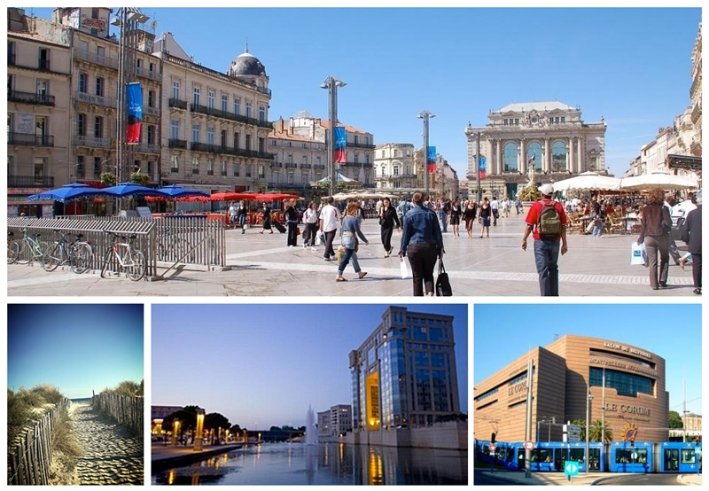
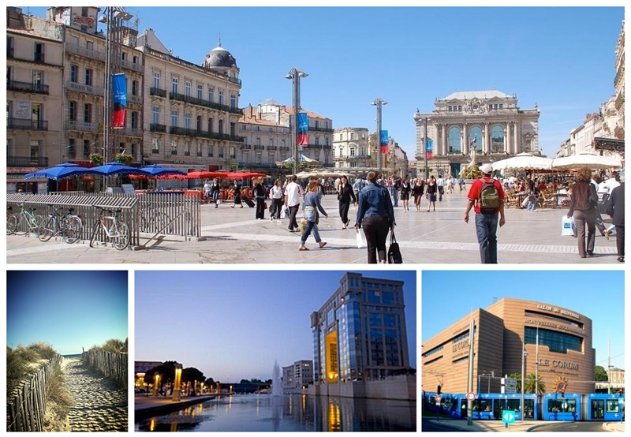

Les lieux
Pour cette cinquième édition, c'est la belle ville de Montpellier qui nous accueille et on est impatients d'y être.

Pour cette cinquième édition, c'est la belle ville de Montpellier qui nous accueille et on est impatients d'y être.

Les conférences du vendredi se déroulent au Corum, palais des congrés de Montpellier, salle et espace Antigone 2.
Le Corum est situé dans le centre-ville de Montpellier, dans le prolongement de la place de la Comédie, sur l'Esplanade Charles de Gaulle.
Plus de précisions sur les autres lieux (ateliers, soirée) bientôt.